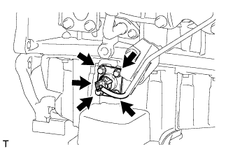

ДАТЧИК УРОВНЯ МАСЛА > СНЯТИЕ |
| 1. СНИМИТЕ ЗАДНЮЮ ЗАЩИТУ КАРТЕРА ДВИГАТЕЛЯ В СБОРЕ |
Выверните 4 болта и снимите заднюю защиту картера двигателя.
| 2. СЛЕЙТЕ МОТОРНОЕ МАСЛО |
Снимите крышку маслоналивной горловины.
Выверните пробку сливного отверстия масляного поддона с прокладкой, а затем слейте моторное масло в емкость.
Протрите масляный поддон и пробку сливного отверстия.
Установите новую прокладку и пробку сливного отверстия масляного поддона.
| 3. СНИМИТЕ ДАТЧИК УРОВНЯ МОТОРНОГО МАСЛА |
|  |
Отсоедините разъем от датчика уровня моторного масла.
Выверните 4 болта и снимите датчик уровня моторного масла.
Срежьте часть прокладки и снимите прокладку с датчика уровня моторного масла.